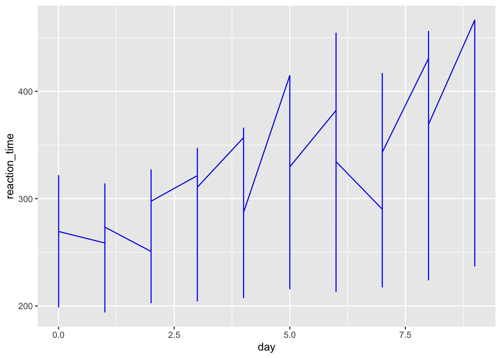
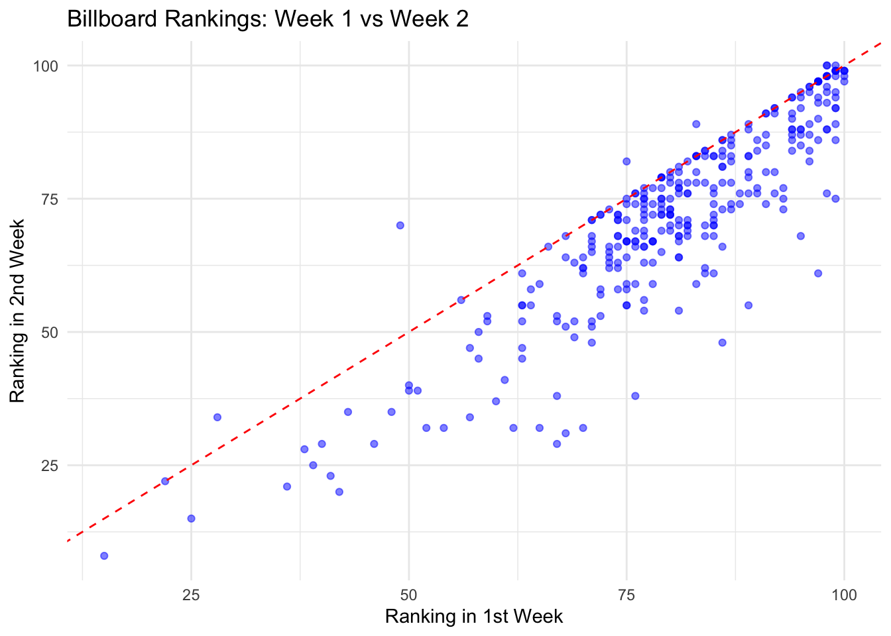
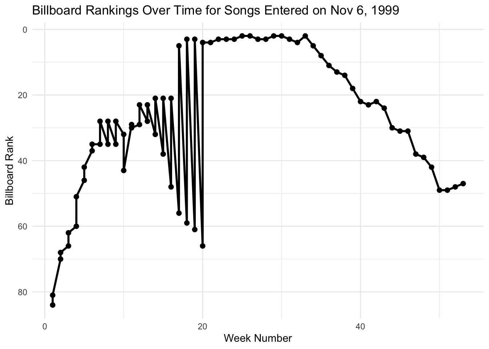

Subject day_0 day_1 day_2 day_3 day_4 day_5 day_6 day_7 day_8 day_9
1 308 249.56 258.70 250.80 321.44 356.85 414.69 382.20 290.15 430.59 466.35
2 309 222.73 205.27 202.98 204.71 207.72 215.96 213.63 217.73 224.30 237.31
3 310 199.05 194.33 234.32 232.84 229.31 220.46 235.42 255.75 261.01 247.52
4 330 321.54 300.40 283.86 285.13 285.80 297.59 280.24 318.26 305.35 354.05
5 331 287.61 285.00 301.82 320.12 316.28 293.32 290.08 334.82 293.75 371.58
6 332 234.86 242.81 272.96 309.77 317.46 310.00 454.16 346.83 330.30 253.8613 Reshaping
13.1 Exercise 1
13.1.0.1 Part a
13.2 What are the units of observation in sleep_wide?
13.2.0.1 Part b
Suppose I ask you to plot each subject’s reaction time (y-axis) vs the number of days of sleep restriction (x-axis). “Sketch” out in words what the first few rows of the data need to look like in order to do this. It might help to think about what you’d need to complete the plotting frame:
- The first few rows need to have days on their own, reaction time and the subject is.
13.2.0.2 Part c
Code
# A tibble: 6 × 3
Subject day reaction_time
<int> <dbl> <dbl>
1 308 0 250.
2 308 1 259.
3 308 2 251.
4 308 3 321.
5 308 4 357.
6 308 5 415.13.3 Exercise 2
13.3.0.1 Part a
13.3.0.2 Part b
13.3.0.3 Part c
Using sleep_long, construct a line plot of reaction time vs day for each subject. This will look goofy no matter what you do. Why? HINT: look back at head(sleep_long). What class or type of variables are Subject and day? What do we want them to be?
13.4 Exercise 3
Code
# A tibble: 6 × 3
Subject day reaction_time
<fct> <dbl> <dbl>
1 308 0 250.
2 308 1 259.
3 308 2 251.
4 308 3 321.
5 308 4 357.
6 308 5 415.13.4.0.1 Part a
Code

13.5 Exercise 4
13.5.0.1 Part a
Make the data wide again, with each day becoming its own column.
# A tibble: 6 × 11
Subject `0` `1` `2` `3` `4` `5` `6` `7` `8` `9`
<fct> <dbl> <dbl> <dbl> <dbl> <dbl> <dbl> <dbl> <dbl> <dbl> <dbl>
1 308 250. 259. 251. 321. 357. 415. 382. 290. 431. 466.
2 309 223. 205. 203. 205. 208. 216. 214. 218. 224. 237.
3 310 199. 194. 234. 233. 229. 220. 235. 256. 261. 248.
4 330 322. 300. 284. 285. 286. 298. 280. 318. 305. 354.
5 331 288. 285 302. 320. 316. 293. 290. 335. 294. 372.
6 332 235. 243. 273. 310. 317. 310 454. 347. 330. 254.13.5.0.2 Part b
Using your intuition, adjust your code from part a to name the reaction time columns “day_0”, “day_1”, etc.
Code
# A tibble: 6 × 11
Subject day_0 day_1 day_2 day_3 day_4 day_5 day_6 day_7 day_8 day_9
<fct> <dbl> <dbl> <dbl> <dbl> <dbl> <dbl> <dbl> <dbl> <dbl> <dbl>
1 308 250. 259. 251. 321. 357. 415. 382. 290. 431. 466.
2 309 223. 205. 203. 205. 208. 216. 214. 218. 224. 237.
3 310 199. 194. 234. 233. 229. 220. 235. 256. 261. 248.
4 330 322. 300. 284. 285. 286. 298. 280. 318. 305. 354.
5 331 288. 285 302. 320. 316. 293. 290. 335. 294. 372.
6 332 235. 243. 273. 310. 317. 310 454. 347. 330. 254.13.6 Exercise 5
# A tibble: 6 × 79
artist track date.entered wk1 wk2 wk3 wk4 wk5 wk6 wk7 wk8
<chr> <chr> <date> <dbl> <dbl> <dbl> <dbl> <dbl> <dbl> <dbl> <dbl>
1 2 Pac Baby… 2000-02-26 87 82 72 77 87 94 99 NA
2 2Ge+her The … 2000-09-02 91 87 92 NA NA NA NA NA
3 3 Doors Do… Kryp… 2000-04-08 81 70 68 67 66 57 54 53
4 3 Doors Do… Loser 2000-10-21 76 76 72 69 67 65 55 59
5 504 Boyz Wobb… 2000-04-15 57 34 25 17 17 31 36 49
6 98^0 Give… 2000-08-19 51 39 34 26 26 19 2 2
# ℹ 68 more variables: wk9 <dbl>, wk10 <dbl>, wk11 <dbl>, wk12 <dbl>,
# wk13 <dbl>, wk14 <dbl>, wk15 <dbl>, wk16 <dbl>, wk17 <dbl>, wk18 <dbl>,
# wk19 <dbl>, wk20 <dbl>, wk21 <dbl>, wk22 <dbl>, wk23 <dbl>, wk24 <dbl>,
# wk25 <dbl>, wk26 <dbl>, wk27 <dbl>, wk28 <dbl>, wk29 <dbl>, wk30 <dbl>,
# wk31 <dbl>, wk32 <dbl>, wk33 <dbl>, wk34 <dbl>, wk35 <dbl>, wk36 <dbl>,
# wk37 <dbl>, wk38 <dbl>, wk39 <dbl>, wk40 <dbl>, wk41 <dbl>, wk42 <dbl>,
# wk43 <dbl>, wk44 <dbl>, wk45 <dbl>, wk46 <dbl>, wk47 <dbl>, wk48 <dbl>, …13.6.0.1 Part a
Construct and summarize a plot of how a song’s Billboard ranking its 2nd week on the chart (y-axis) is related to its ranking the 1st week on the charts (x-axis). Add a reference line geom_abline(intercept = 0, slope = 1). Songs above this line improved their rankings from the 1st to 2nd week.
Code
billboard_long <- billboard |>
pivot_longer(cols = starts_with("wk"), names_to = "week", values_to = "rank", values_drop_na = TRUE) |>
mutate(week = as.numeric(gsub("wk", "", week)))
billboard_weeks <- billboard_long |>
filter(week %in% c(1, 2)) |>
pivot_wider(names_from = week, values_from = rank, names_prefix = "week_")
ggplot(billboard_weeks, aes(x = week_1, y = week_2)) +
geom_point(color = "blue", alpha = 0.5) +
geom_abline(intercept = 0, slope = 1, linetype = "dashed", color = "red") +
labs(
title = "Billboard Rankings: Week 1 vs Week 2",
x = "Ranking in 1st Week",
y = "Ranking in 2nd Week"
) +
theme_minimal()
13.6.0.2 Part b
Use your wrangling tools to identify which songs are those above the line in Part a, i.e. with rankgings that went up from week 1 to week 2.
Code
# A tibble: 255 × 4
artist track week_1 week_2
<chr> <chr> <dbl> <dbl>
1 "Santana" Maria, Maria 15 8
2 "Pink" There U Go 25 15
3 "N'Sync" Bye Bye Bye 42 20
4 "Elliott, Missy \"Misdemeanor\"" Hot Boyz 36 21
5 "Madonna" Music 41 23
6 "Backstreet Boys, The" Shape Of My Heart 39 25
7 "Martin, Ricky" She Bangs 38 28
8 "Dixie Chicks, The" Goodbye Earl 40 29
9 "Eiffel 65" Blue 67 29
10 "Guy" Dancin' 46 29
# ℹ 245 more rows13.6.0.3 Part c
Define a new dataset, nov_1999, which: only includes data on songs that entered the Billboard charts on November 6, 1999 keeps all variables except track and date.entered. HINT: How can you avoid writing out all the variable names you want to keep?
Code
# A tibble: 2 × 77
artist wk1 wk2 wk3 wk4 wk5 wk6 wk7 wk8 wk9 wk10 wk11 wk12
<chr> <dbl> <dbl> <dbl> <dbl> <dbl> <dbl> <dbl> <dbl> <dbl> <dbl> <dbl> <dbl>
1 Count… 84 70 66 60 46 37 35 35 35 32 29 29
2 Hill,… 81 68 62 51 42 35 28 28 28 43 30 23
# ℹ 64 more variables: wk13 <dbl>, wk14 <dbl>, wk15 <dbl>, wk16 <dbl>,
# wk17 <dbl>, wk18 <dbl>, wk19 <dbl>, wk20 <dbl>, wk21 <dbl>, wk22 <dbl>,
# wk23 <dbl>, wk24 <dbl>, wk25 <dbl>, wk26 <dbl>, wk27 <dbl>, wk28 <dbl>,
# wk29 <dbl>, wk30 <dbl>, wk31 <dbl>, wk32 <dbl>, wk33 <dbl>, wk34 <dbl>,
# wk35 <dbl>, wk36 <dbl>, wk37 <dbl>, wk38 <dbl>, wk39 <dbl>, wk40 <dbl>,
# wk41 <dbl>, wk42 <dbl>, wk43 <dbl>, wk44 <dbl>, wk45 <dbl>, wk46 <dbl>,
# wk47 <dbl>, wk48 <dbl>, wk49 <dbl>, wk50 <dbl>, wk51 <dbl>, wk52 <dbl>, …13.6.0.4 Part d
Create and discuss a visualization of the rankings (y-axis) over time (x-axis) for the 2 songs in nov_1999. There are hints below (if you scroll), but you’re encouraged to play around and use as few hints as possible.
Hints: Should you first pivot wider or longer? Once you pivot, the week number is turned into a character variable. How can you change it to a number?
Code
nov_1999_long <- nov_1999 |>
pivot_longer(cols = starts_with("wk"), names_to = "week", values_to = "rank", values_drop_na = TRUE) |>
mutate(week = as.numeric(gsub("wk", "", week)))
ggplot(nov_1999_long, aes(x = week, y = rank)) +
geom_line(size = 1) +
geom_point(size = 2) +
scale_y_reverse() +
labs(
title = "Billboard Rankings Over Time for Songs Entered on Nov 6, 1999",
x = "Week Number",
y = "Billboard Rank"
) +
theme_minimal()
13.7 Exercise 6
# A tibble: 6 × 5
year google_knowledge_occupation show group raw_guest_list
<int> <chr> <date> <chr> <chr>
1 1999 actor 1999-01-11 Acting Michael J. Fox
2 1999 comedian 1999-01-12 Comedy Sandra Bernhard
3 1999 television actress 1999-01-13 Acting Tracey Ullman
4 1999 film actress 1999-01-14 Acting Gillian Anderson
5 1999 actor 1999-01-18 Acting David Alan Grier
6 1999 actor 1999-01-19 Acting William Baldwin 13.7.0.1 Part a
Identify the 15 guests that appeared the most. (This isn’t a very diverse guest list!)
Code
# A tibble: 16 × 2
raw_guest_list n
<chr> <int>
1 Fareed Zakaria 19
2 Denis Leary 17
3 Brian Williams 16
4 Paul Rudd 13
5 Ricky Gervais 13
6 Tom Brokaw 12
7 Bill O'Reilly 10
8 Reza Aslan 10
9 Richard Lewis 10
10 Will Ferrell 10
11 Sarah Vowell 9
12 Adam Sandler 8
13 Ben Affleck 8
14 Louis C.K. 8
15 Maggie Gyllenhaal 8
16 Mike Huckabee 813.7.0.2 Part b
CHALLENGE: Create the following data set containing 19 columns:
The first column should have the 15 guests with the highest number of total appearances on the show, listed in descending order of number of appearances. 17 columns should show the number of appearances of the corresponding guest in each year from 1999 to 2015 (one per column). Another column should show the total number of appearances for the corresponding guest over the entire duration of the show.
Code
# A tibble: 15 × 19
# Groups: raw_guest_list [15]
raw_guest_list total `1999` `2000` `2001` `2002` `2003` `2004` `2005` `2006`
<chr> <int> <int> <int> <int> <int> <int> <int> <int> <int>
1 Fareed Zakaria 19 0 0 1 0 1 2 2 2
2 Denis Leary 17 1 0 1 2 1 0 0 1
3 Brian Williams 16 0 0 0 0 1 1 2 1
4 Paul Rudd 13 1 0 1 1 1 1 1 0
5 Ricky Gervais 13 0 0 0 0 0 0 1 2
6 Tom Brokaw 12 0 0 0 1 0 2 1 0
7 Richard Lewis 10 1 0 2 2 1 1 0 0
8 Will Ferrell 10 0 1 1 0 1 1 1 1
9 Bill O'Reilly 10 0 0 1 1 0 1 1 0
10 Reza Aslan 10 0 0 0 0 0 0 1 2
11 Sarah Vowell 9 0 0 0 1 0 1 1 1
12 Adam Sandler 8 1 2 0 1 0 0 0 1
13 Ben Affleck 8 0 0 0 0 2 0 0 1
14 Maggie Gyllenh… 8 0 0 0 0 1 0 1 1
15 Louis C.K. 8 0 0 0 0 0 0 0 1
# ℹ 9 more variables: `2007` <int>, `2008` <int>, `2009` <int>, `2010` <int>,
# `2011` <int>, `2012` <int>, `2013` <int>, `2014` <int>, `2015` <int>13.7.0.3 Part c
Let’s recreate the first figure from the article. This groups all guests into 3 broader occupational categories. However, our current data has 18 categories:
Code
plot_data <- daily |>
mutate(broad_group = case_when(
group %in% c("Acting", "Athletics", "Comedy", "Musician") ~ "Acting, Comedy & Music",
group %in% c("Media", "media", "Science", "Academic", "Consultant", "Clergy") ~ "Media",
group %in% c("Politician", "Political Aide", "Government", "Military", "Business", "Advocacy") ~ "Government and Politics",
.default = NA
)) |>
filter(!is.na(broad_group))